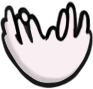
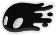
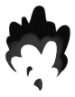

Magias:
Magias são habilidades que o jogador pode ativar segurando FOCO/CONJURAR ou tocando apenas uma vez FOCO/CONJURAR ou CONJURAR RÁPIDO enquanto estiver neutro, apertando BAIXO, ou CIMA.
Magias usam ALMA, que pode ser adquirida atacando inimigos, Totens de Alma, ou Jarros de Alma. Todas as magias usam 33% do medidor de ALMA do jogador. Além do Foco, esse custo pode ser reduzido em todas as magias para 22% com Dobrador de Magias.
FOCO Foque a ALMA coletada para reparar sua casca e curar dano. Ataque inimigos para coletar ALMA.
ESPÍRITO VINGATIVO Conjure um espírito que voará para frente e queimará inimigos em seu caminho O espírito requer ALMA para ser conjurado. Ataque inimigos para coletar ALMA.

MERGULHO DESOLADOR Golpeie o solo com uma força concentrada de ALMA. Essa força pode destruir inimigos ou quebrar estruturas frágeis. A força requer ALMA para ser conjurada. Ataque inimigos para coletar ALMA
ESPECTROS UIVANTES Destrua inimigos com ALMA gritante. Os Espectros requerem ALMA para serem conjurados. Ataque inimigos para coletar ALMA.
ALMA SOMBRIA Conjure uma sombra que voará para frente e queimará inimigos em seu caminho. O espírito requer ALMA para ser conjurado. Ataque inimigos para coletar ALMA.
ESCURIDÃO DESCENTE Golpeie o solo com uma força concentrada de ALMA e Sombra. Essa força pode destruir inimigos ou quebrar estruturas frágeis. A força requer ALMA para ser conjurada. Ataque inimigos para coletar ALMA

GRITO DO ABISMO Destrua inimigos com ALMA e Sombra gritantes. Os Espectros requerem ALMA para serem conjurados. Ataque inimigos para coletar ALMA.